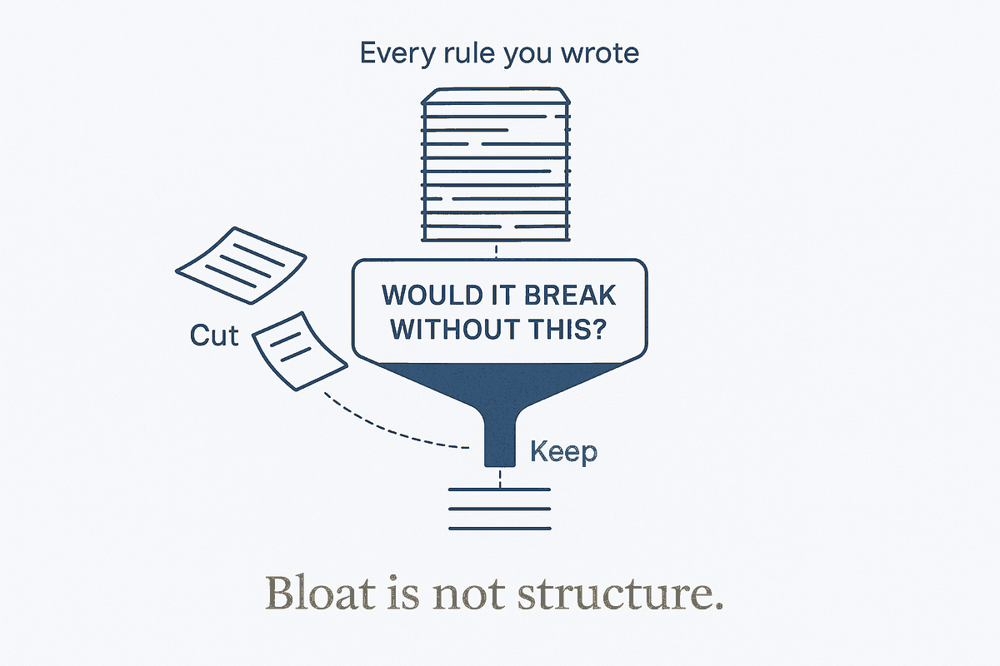

One question decides what stays in your rules: would a future session get something wrong without this line? If not, cut it. Bloat isn't structure.

The failure mode of people who get structure is over-structure: the forty skills of which three are used, the prompt library never opened, the context file that grew past the point where the model still follows it. Adherence measurably drops as instructions pile up — every added line dilutes the attention every other line gets. Bloat isn't structure. Bloat is what structure looks like when nothing is ever removed.
The cure is one question, applied line by line: would a future session get something wrong without this? If yes, the line has a job — keep it. If no, cut it, however clever it sounds. Not "might it help someday," not "it took effort to write" — one criterion, ruthlessly applied. The test works because it reframes every rule as a prevented failure: a rule that prevents nothing is doing nothing, and a rule doing nothing in a context file is not neutral.
Not neutral, because a stale rule misinforms every run. The instruction that described last quarter's workflow actively steers the model wrong today; two rules that quietly contradict each other force it to pick one, silently, differently each time — which reads as flakiness and is actually your own file arguing with itself. Pruning isn't housekeeping; it's reliability engineering. The system is only as deterministic as its rules are current and consistent.
This is via negativa pointed at your own structure: the setup improves by what you remove. A context file you maintain by deleting is more deliberate than one you maintain by adding — because every surviving line has re-earned its place, and the model reads a file where everything present is true, current, and load-bearing. Small, sharp and obeyed beats long, complete and skimmed.